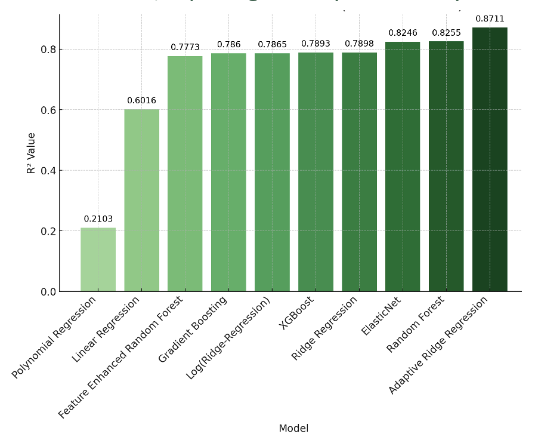

Welcome to the Cookie Forecasting Manual
Click the button below to explore detailed sections
Welcome to the Cookie Forecasting Manual
Click the button below to explore detailed sections
Every year, thousands of Girl Scouts rely on cookie sales for fundraising. The current forecast method—based solely on the previous year’s numbers—explains only 70% of sales variability. This limitation often leads to missed revenue opportunities or excess stock. By leveraging advanced predictive models, we can bridge this gap and unlock new opportunities for growth, efficiency, and increased fundraising success.
Optimized inventory management, enhanced marketing strategies, increased troop engagement, and data-driven decision making.
Analytical Context: The context involves analyzing historical sales data and external factors to improve forecasting accuracy by troop and cookie type.
Challenges: High variance in sales across troops and regions, impact from external factors like weather and local events, and ensuring model reliability for troop leaders.
Solution Focus: Implementing machine learning models to enhance forecasting accuracy and optimize inventory management.
Success Metrics: Success is measured by the reduction of the forecast error (RMSE) from 14 to 9 and increasing alignment between projected demand and final orders.
Can machine learning models effectively integrate historical sales data, troop participation rates to improve the accuracy of cookie sales forecasts beyond traditional methods?
How can insights from predictive models be used to optimize inventory management and marketing strategies for Girl Scout troops?
Date: Sales transaction date.
Number of Cases Sold: Total boxes sold.
Cookie Type: Different cookie varieties.
Troop ID: Identifies the troop responsible for sales.
Number of Girls: Number of girl scouts participating in sales.
Period: Specific sales time window.
The model assumes past sales patterns remain relevant to future predictions. No major disruptions in supply chain.
Model may struggle with troops that lack historical data or operate in volatile market conditions.
Groups the dataset by troop_id and cookie_type. Explicitly splits data into training (periods 1–4) and testing (period 5).
SIO Tool: Uses last year’s sales and troop participation to estimate.
Running Mean: Averages past sales from 2021-2024 to predict 2025.
Our best-performing model, Adaptive Ridge Regression, reduced RMSE to 9.06, improving accuracy substantially.
We tested 10 models, the R² chart illustrates their performance. Adaptive Ridge Regression (R² = 0.8711) was the most accurate.
Confidence in Predictions: Predictions were validated using a ±2×RMSE heuristic, ensuring 95% of actual sales values fall within the predicted confidence interval.